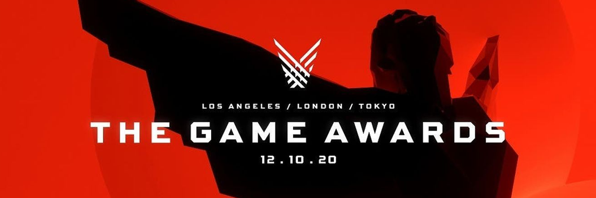

El premio "Game of the Year" (GOTY) es uno de los reconocimientos más prestigiosos en la industria de los videojuegos, otorgado a los títulos más sobresalientes en términos de innovación, jugabilidad y narrativa. En esta sección exploraremos los ganadores de 2017, 2018 y 2019, analizando sus características y el impacto que tuvieron en la industria.
Cada uno de estos títulos no solo fue aclamado por sus mecánicas de juego y narrativa, sino que también dejó una marca indeleble en los estándares de calidad de la industria. A través de esta página web, exploraremos cómo estos juegos lograron obtener el máximo galardón y qué los hizo únicos.
Los juegos que reciben este premio suelen destacarse por su capacidad de innovar en múltiples aspectos, como la narrativa, la jugabilidad, los gráficos y el impacto cultural. Desde la libertad de exploración en Zelda: Breath of the Wild, pasando por la emotiva historia de God Of War, hasta la precisión desafiante de Sekiro, estos títulos redefinieron lo que significa crear experiencias memorables para los jugadores.
Haz clic en los enlaces del índice para explorar más sobre cada juego y descubre por qué se convirtieron en los mejores de su año.